sick,,,29.jul.23
going through it at the moment because i am sick!!!  :(((( this is just day one so it isnt that bad but man. does my entire body fucking hurt
:(((( this is just day one so it isnt that bad but man. does my entire body fucking hurt  im pretty sure its just a cold (i hope) but still. it really sucks. but anyway that prob wont stop me from working on my site here and there, but i'll be taking it easy tho. i just hope it goes away soon. literally have a gallon of water right next to me because i am a huge believer in the power of water when i get sick (also i just need to drink more water in general)
im pretty sure its just a cold (i hope) but still. it really sucks. but anyway that prob wont stop me from working on my site here and there, but i'll be taking it easy tho. i just hope it goes away soon. literally have a gallon of water right next to me because i am a huge believer in the power of water when i get sick (also i just need to drink more water in general)
since i've been mostly on my bed with a fever, i've been playing a lot of pikmin 4 (thank you to my bf for giving me his acc with pikmin 4 so i could play it, i dont really have the money for that rn ) and boy. am i SO SO SO SO in love with


 OATCHI
OATCHI
 i've seen a lot of dogs in video games and i love them all. but the design of oatchi is just so lovely to me, it really takes the cake. like thats a whole ass pug on two paws COME ON!!!!! he looks so goofy and stupid and cute and dumb and silly AND I LOVE HIM SO MUCH
i've seen a lot of dogs in video games and i love them all. but the design of oatchi is just so lovely to me, it really takes the cake. like thats a whole ass pug on two paws COME ON!!!!! he looks so goofy and stupid and cute and dumb and silly AND I LOVE HIM SO MUCH
we fucking love you oatchi, i wish he was real  he would be my bestie fr
he would be my bestie fr

this dog is all i think about while playing that game
hopefully i'll be able to make a gaming log entry for pikmin 4 pretty soon, alongside an entry for sticky business as well! which i got as a gift from mimi (thank you!  ) i had so much fun playing that sticker game last week, and i really wanna showcase some of the stickers i've made in that game. my dream come true. to make silly stickers
) i had so much fun playing that sticker game last week, and i really wanna showcase some of the stickers i've made in that game. my dream come true. to make silly stickers
oh and talking about pikmin 4, i've picked up pikmin bloom again too! despite it draining my phone battery like CRAZYYY (1 percent gone per minute that i have that app opened, i really need a new phone...) it does work WONDERS to motivate me to just go on a walk right outside my neighborhood, since something as simple as going on a walk is a struggle for me most of the time. but im glad it helps me. it has no oatchi..... but if it helps me get the motivation to go on daily walks then that will do 
 i really couldnt help but make my own
i really couldnt help but make my ownanyway yeah thats all i wanted to say tonite hopefully i'll feel better soon. im gonna go back to bed and play some more pikmin 4 so i can see oatchi and smile
 listening to note by shinee
listening to note by shinee
barbenheimer27.jul.23
i did the oppenheimer and barbie double feature yesterday with bf and friends  it was a lot tbh (almost got out with a headache) but i had fun!! first, we watched oppenheimer and then barbie to end on a good note. and let me tell you. i dont think oppenheimer needed to be that long
it was a lot tbh (almost got out with a headache) but i had fun!! first, we watched oppenheimer and then barbie to end on a good note. and let me tell you. i dont think oppenheimer needed to be that long  very cool movie but my god did that last hour kinda dragged. we were all pretty hungry at the end of that movie (we didnt get any popcorn at the start cus the line was insanely long) and the inbetween time we had to get some food before barbie started wasnt a lot. so we rushed to the nearest fast food and hid the food we ordered in our pockets and bags so we can eat it while watching barbie
very cool movie but my god did that last hour kinda dragged. we were all pretty hungry at the end of that movie (we didnt get any popcorn at the start cus the line was insanely long) and the inbetween time we had to get some food before barbie started wasnt a lot. so we rushed to the nearest fast food and hid the food we ordered in our pockets and bags so we can eat it while watching barbie  thank god for pockets and bags. but about barbie..... i liked it!!! the daughter and mom shit always gets to me (since i can relate to it) and while VERY cheesy (on purpose ofc) i still found it very charming. and honestly i got emotional as well during some parts. def the highlight of the night :]
thank god for pockets and bags. but about barbie..... i liked it!!! the daughter and mom shit always gets to me (since i can relate to it) and while VERY cheesy (on purpose ofc) i still found it very charming. and honestly i got emotional as well during some parts. def the highlight of the night :]
before entering the theater we were looking around the mall and i saw some gay skeleton pillows!!! awesome
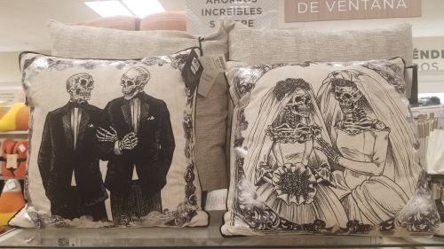
 sweet plaintain is like one of my fav things ever
sweet plaintain is like one of my fav things ever listening to little miss by bôa
art block?23.jul.23
i posted a new doodle to my art page yesterday. the art post talks more in-depht about it if you would like to give it a read
i've been meaning to start drawing again. its been 6 months since i've drawn anything. and lately i've been looking at more and more art that inspire me and makes me go "wow i wish i could do something like that someday" and im never gonna achieve it if i dont start drawing more frequently 
i really wish drawing came easily to be. because it is something i enjoy doing, but it can also be really draining for me when i just cant figure it out. and besides that, i have have the not-having-enough-motivation to draw frequently problem. i feel like i need A LOT of energy to draw. energy that i dont really have a lot of.
i dont know. i stumbled upon some minecraft concept art by mariana salimena and i think i cried while looking at these. or i really wanted to. actually i dont really remember if i cried or not. but i def felt a lot of things while looking at these

more pics here


which yeah. it sounds really silly that i probably cried to some minecraft concept art. it might have just been that i was really going through it that day, but i just love but love so much the gentleness of these artworks. it captures so well the world of minecraft. and i look at this and it just makes me wish i could do something like this. to create a piece of art and make it have some sort of reaction to the view. i find it very inspiring and fascinating.
i know i have a long way to go with my art if i want it be something like i just described. but at least me wishing for my art to be this someday has been pretty much my only motivation for me to grab my pen and just. try and do something. anything.
i originally titled this diary log entry "art block" but i think this has more to do with my depression than an art block. i have ideas for stuff to draw and paint. things that i want to try out in my art. but i just find it really hard to grab that pen and do anything these days

listening to 999 by siinamota
collie puppies20.jul.23
me realizing that i will never get better at art if i dont keep drawing (aka practicing)


they loved playing with my shoe and its shoelaces for some reason
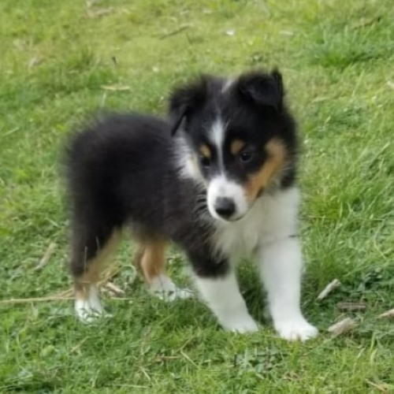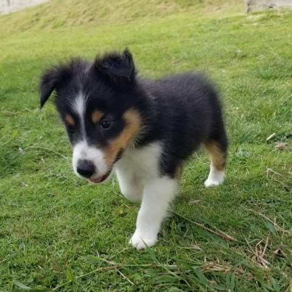 listening to august 17 by kinoue64.
cooking17.jul.23
some days i have really good days. and some days i have really bad days. and some days its just a mix of both  its pretty tiring at times. but im kinda trying my best over here so at least theres that
its pretty tiring at times. but im kinda trying my best over here so at least theres that 
as i've talked about it previously, i've been getting really into cooking lately. dont really know why tbh bc most of the time it is quite an effort to do anything. but for the past month or so i've been enjoying making my own meals!! and it is such a nice feeling when you cook something and it tastes so yummy. idk i just find the feeling very special and warm  as we all know: i am fighting for my life to get a job. so thank fucking god for food stamps. because of my sudden liking to cooking, i've also been finding grocery shopping by myself less tedious and more fun as well! .... well ... tbh its not very fun that i have to take note of every item i get to make sure i dont go past my food stamp limit but hey. i will take what i can get
as we all know: i am fighting for my life to get a job. so thank fucking god for food stamps. because of my sudden liking to cooking, i've also been finding grocery shopping by myself less tedious and more fun as well! .... well ... tbh its not very fun that i have to take note of every item i get to make sure i dont go past my food stamp limit but hey. i will take what i can get
i usually take pics of the things that i cook so maybe i'll make an album page showcasing them! that would be pretty neat i think. but anyway heres some stuff i've cooked this past month:
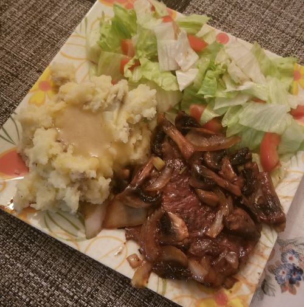alright so here i did porkchop with onions and mushrooms sautee with a stir-fry sauce (that i am very obsessed with using while cooking atm), mashed potatoes with chiken gravy, and of course some yummy salad. you know i've come a long way for me to willingly make myself salads and eat them and being satisfied with it. i've never been a salad person, but i've been really trying to eat more healthy for the past year and with that i've learned to like eating salads as part of my meals! honestly, good job me!
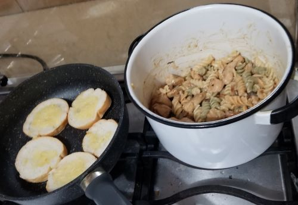and this plate was from yesterday! cooked chicken with butter to throw it into this pasta, and i ate it with some alfredo cheese and it tasted SOOOOOO GOOD!!!!! i also mashed some garlic and did garlic bread to eat along side it. i almost died eating the bread bc i didnt noticed i actually used TOO MUCH garlic so thats good that i know that for next time. but i really really enjoyed this a lot.
people have very different ways of seasoning their meat so def for my next diary log entry, i'll share what i usually use to season my stuff! i'll put that on my to-do list
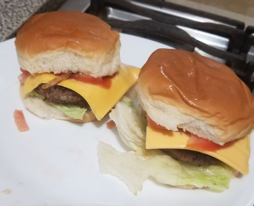next stop i have some burgers that i did inspired by the kirby burgers. a week ago i got to play kirby and the forgotten land with my bf. theres a cafe in the game where you can either get a gig OR eat a meal (which heals you!) and one of those meals was the adorable kirby burger. i recreated the order in which the ingredients (?) are placed. 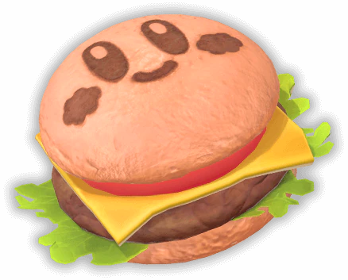sadly i couldnt get the kirby face on the bun :((( tried burning some stuff and putting it on the bun to see if maybe i could draw it that way but i still couldnt get it to work :( so i just imagined there was a kirby face on the bun as i was eating it and i was pretty much satisfied with it!
thats pretty much all the meals i have for this log entry! i never thought i would get this invested into cooking tbh, but man am i enjoying it. and its a very nice thing to enjoy too. maybe i've been watching the bear too much... so with all that said if anyone has any site recommendations for new recipes and stuff please feel free to msg me!
these next pics are just random pics i've had for a while that i'd like to share. hover for comments :3
.jpg "lizard guy while i was taking a walk on the beach")
.jpg "also from said beach") 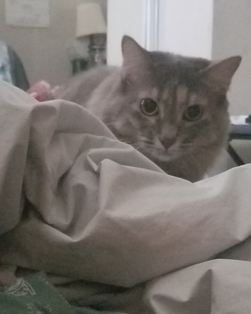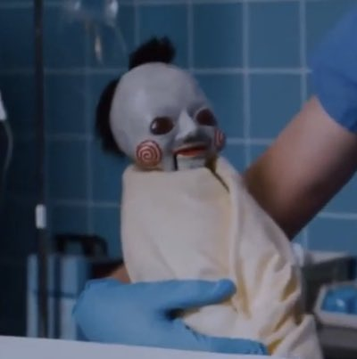
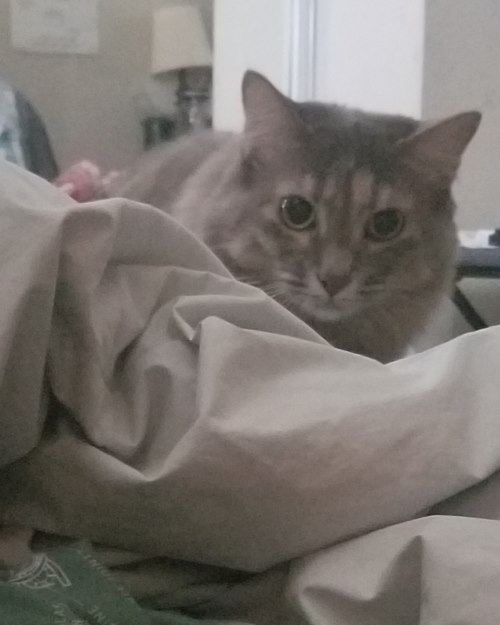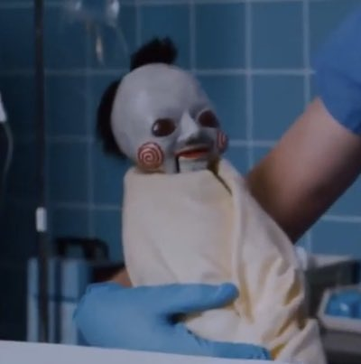
 hmmmm other than that i dont have much to share... been going strong with my bloodborne playthrough! and i also finished writing my blog post about my experience with bloodborne and anxiety yesterday! its been a bit crazy. it took me a while to get it together so i hope it is coherent enough for the readers
hmmmm other than that i dont have much to share... been going strong with my bloodborne playthrough! and i also finished writing my blog post about my experience with bloodborne and anxiety yesterday! its been a bit crazy. it took me a while to get it together so i hope it is coherent enough for the readers
and talking about video games, i've also been getting back into project sekai. i just finished nightcord's story and hoo. hoo boy. mafuyu.......... the hatsune miku gacha game kinda got to me guys and like... A LOT. i felt really identified by mafuyu as well... :( and besides that, i also want to learn how to play on expert mode as someone who only uses my thumbs. and i know that expert mode requires way more than just my two thumbs. maybe i'll get the hang of it someday
website update: i will be working on redoing my about page this week from the ground up with tabs! it should be pretty fun to do so since it still uses code from when i first made my site!!! it will be cool to see how i've been progress with my HTML and CSS knowledge (ignoring JS)
and i think that is all i have to say for today! i hope everyone has a nice week 
sunset08.jul.23
hello everyone! havent been here in a while. i was kinda in a vacation (of sorts...) i went to the beach and spent some time with my awesome bf. i took lots of pics with my instant camera so i will wait to scan those before i put them on the site. but anyway it was pretty chill and relaxing. you know despite not doing much for the past..... few months (im really still trying to get employed) it was a very nice breather and it helped me clear my head a bit
now i've just been keeping myself busy with bloodborne! scary? yes. fun? yes!! i've never played a soulsborne game before so its been really fun to actually Get It and be immersed in its world. i have a lot of pages that i wanna work on for my website, and one of them is a blog post about about bloodborne and how it helped me realized something about myself! (I KNOW........ what a classic) it should be ready sometime this coming week. honestly i cant wait to finish it.
other than that things have been pretty much the same. but hey. at least i got to witness a beautiful sunset today
.jpg)
.jpg)
.jpg)
.jpg)
.jpg)